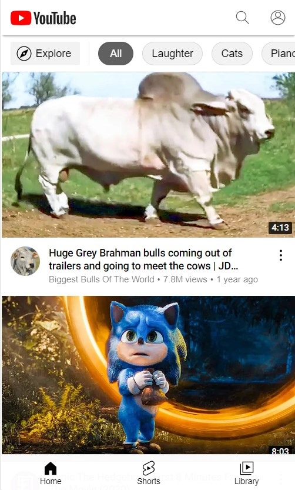
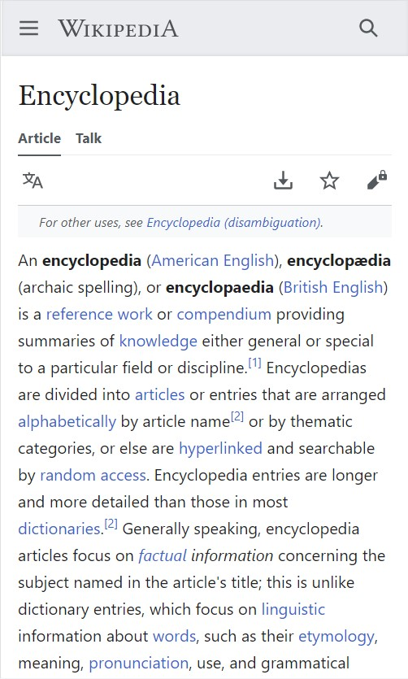

Proximity
Youtube
youtube.com The buttons adjacent to the Explore button are spaced in such a way that it demonstrates they are category filters for exploration. A video's channel icon, title, and '...' are also closer to the video above them rather than the video below them, making it clear which video they are tied to.
Contrast
Blizzard
blizzard.comThe dark color choice contrasts typical default browser setting, making the page stand out from others more readily, and inside the page itself, the dark background makes the vibrant colorization of logos and video game graphics stand out as well.
White Space
Wikipedia
wikipedia.com The clean and simple design of the page helps it to feel like it is perfectly fulfilling its purpose as an online encyclopedia; additionally, different elements are given space from the edges to increase readability, or visibility and usability in the case of icons such as search and download.